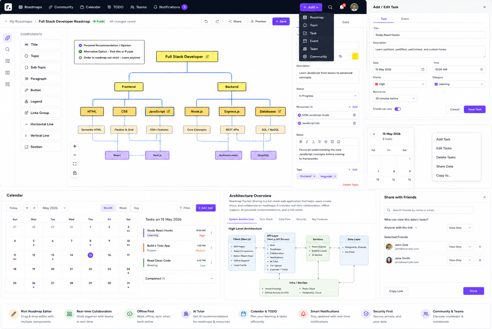
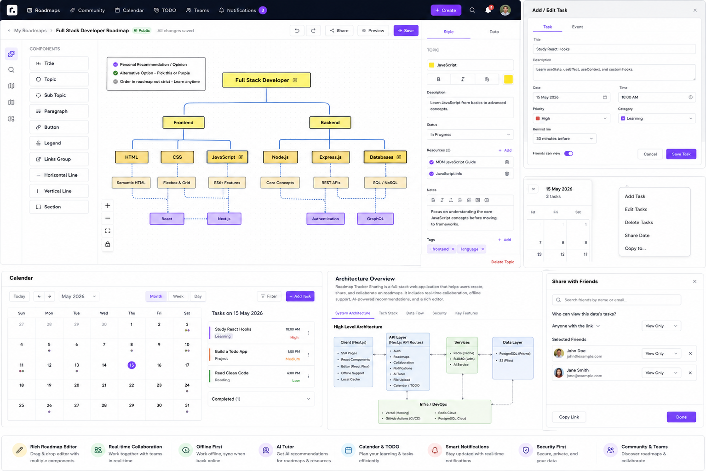

This document describes the complete product direction and the implemented application boundaries: visual roadmap editing, topic/resource data, public community roadmaps, teams and review flow, calendar and TODO planning, notifications, Redis caching, offline persistence, inactivity sessions, AI recommendations, SSR, and CI/CD.
The product is a learning workspace where a user can build a true tree-shaped roadmap, attach resources to every topic, track progress on a calendar, manage tasks, collaborate with teams, publish public roadmaps, and receive recommendations from a chatbot that only searches public data.

React Flow canvas with draggable nodes, hierarchy edges, custom visual blocks, inspector editing, zoom/pan, minimap, undo/redo, autosave and persistent editor state.
Public roadmaps are searchable and can be recommended by the AI assistant. Private/link-only roadmaps stay outside public discovery.
A compact month view can select a day, add/edit tasks, toggle completion, and show private or friend-visible task access.
The editor is the most important surface. It should feel like a diagram builder rather than a table editor: the canvas is primary, the components palette is left, and the inspector is right.

Each component can be clicked into the canvas or dragged to a specific canvas point.
{
"editorState": {
"elements": [
{ "id": "element-…", "kind": "legend", "text": "Legend", "position": {"x":120,"y":80} }
],
"topicPositions": {"topic-id": {"x":520,"y":220}},
"connections": [],
"viewport": {"x":0,"y":0,"zoom":1}
}
}editor_state JSON field. This lets the editor evolve without turning every visual-only property into a relational column.The application provides two roadmap modes. The normal mode keeps the current dedicated editor. The 1-page mode places the visual editor first and compact planning/share panels below it, allowing the user to manage roadmap, calendar and task context without changing pages.
| Action | Destination | Purpose |
|---|---|---|
| Roadmap Studio | /roadmap | Current full editor |
| 1-page workspace | /roadmap?view=one-page | Combined roadmap + planner |
| Topic | /roadmap?action=topic | Jump into roadmap creation |
| Task | /calendar?newTask=1 | Open add-task modal |
| Team | /collaborate | Team collaboration |
| Community roadmap | /community | Public roadmap discovery |
User / profileRoadmapTopicResourceTodoDailyLogRoadmapShareShareRequestTopicShareNotificationCollabGroup, members and join requestsCollabBranch, CollabCommit and collaboration eventsRoadmap 1 ── * Topic Topic 1 ── * Resource Topic 1 ── * TopicShare Roadmap 1 ── * RoadmapShare Roadmap 1 ── * Todo Topic 1 ── * Todo Roadmap 1 ── * CollabBranch Branch 1 ── * CollabCommit ShareRequest ── * Notification
Topic updates validate self-parenting and ancestor cycles before changing the parent. Reordering is persisted server-side so moving a topic in the editor changes the actual roadmap hierarchy, not just its pixels.
Dashboards, roadmaps, public roadmaps, notifications, TODO ranges, search and chatbot recommendations are the main read-heavy surfaces.
Write operations bump user cache versions. Public roadmap writes also bump public roadmap cache versions. No global Redis flush is used for application cache invalidation.
FLUSHALL or FLUSHDB from an application request. Cache invalidation is scoped by keyspace/version so a shared Redis instance cannot erase unrelated applications.The visual editor writes a per-roadmap local draft while dirty. A newer draft is recovered when reopening the roadmap.
Recent API GET responses can be reused while disconnected so a page can still render useful context.
Failed mutating requests are queued and replayed when the browser becomes online. Replay must use the original, unwrapped fetch implementation to avoid recursive queueing.
Local queue and cache namespaces should be scoped to the authenticated user. Logout/session expiry must prevent a later user from replaying or reading another user's offline data.
Only roadmaps explicitly marked public participate in public discovery and chatbot recommendations.
Roadmap share grants determine which users can view friend-visible tasks. A task marked “Friends can view” is therefore tied to a roadmap that the target viewer can access.
Owners control member limits, join requests and member management. The collaboration area provides a clear boundary between discovery and editing rights.
Branches capture snapshots, commits contain author/message metadata and review/merge moves approved changes into the roadmap.
The calendar is intentionally compact: the month occupies the left side while the selected date's task list and learning log occupy the right. Every date exposes an options menu and task items open an edit modal.
While logged in the app bar pings the backend every five minutes for unread count. Opening the bell triggers a fresh notification fetch so the dropdown is current.
The session watcher uses configurable environment variables for inactivity duration and the warning window. The final warning displays a countdown and a “Continue Session” action.
NEXT_PUBLIC_APP_SYNC_MS=180000 NEXT_PUBLIC_INACTIVITY_TIMEOUT_MS=7200000 NEXT_PUBLIC_INACTIVITY_WARNING_MS=300000
The assistant receives a learning query, searches only public roadmap/resource data, ranks useful matches, and returns direct links. Private and link-only roadmaps are never included in the recommendation index.
User question → public roadmap search → ranking → direct roadmap/resource links → cached recommendation
Dashboard shell, public/share views, notification page shell and any read-only public roadmap content can render on the server for faster first paint and better crawlability.
React Flow editor, drag/drop palette, calendar date interactions, notification dropdown and offline browser APIs must remain client components where their browser state is necessary.
| Capability | Rule |
|---|---|
| Roadmap edit | Owner or explicitly granted collaborator |
| Public discovery | privacy = public |
| Friend-visible task | Task is linked to a roadmap and viewer has share access |
| Session expiry | Client detects inactivity, calls logout endpoint, redirects to login |
| Redis | Scoped keys; no global flush in request paths |
| Offline data | Must be namespaced by authenticated user and cleared/quarantined at logout |
Recommended production dependencies: PostgreSQL, Redis, environment variables, secure session secret, and a deploy target that can run the Next.js server with the database reachable before database-dependent requests.
The following reference is preserved with the project so future UI changes can be compared against the intended information architecture.